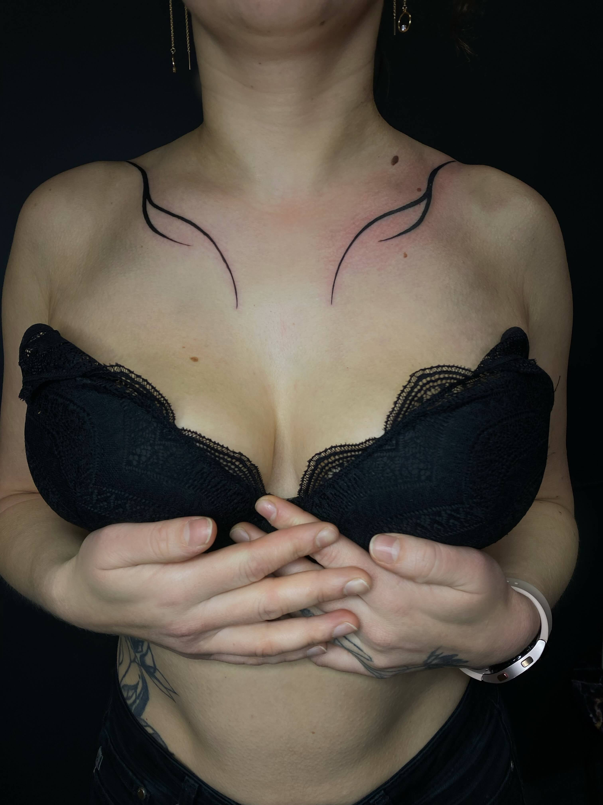
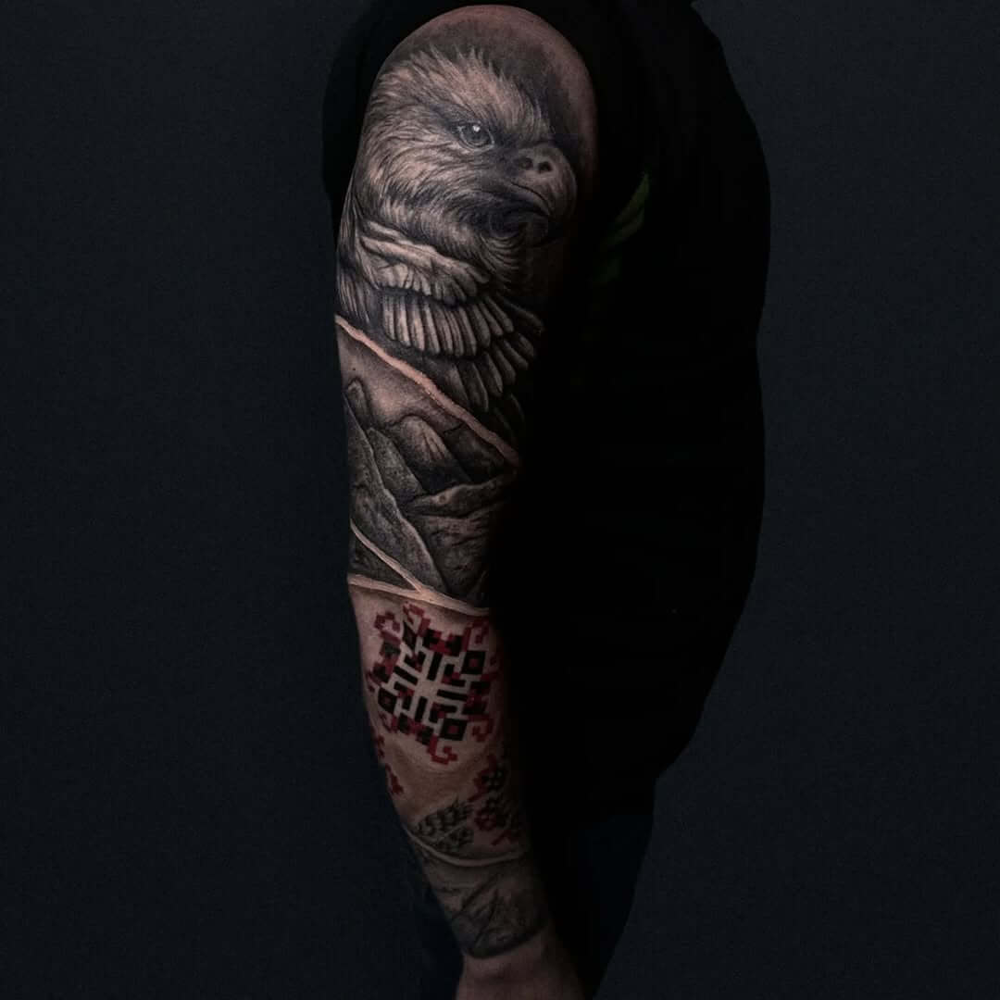
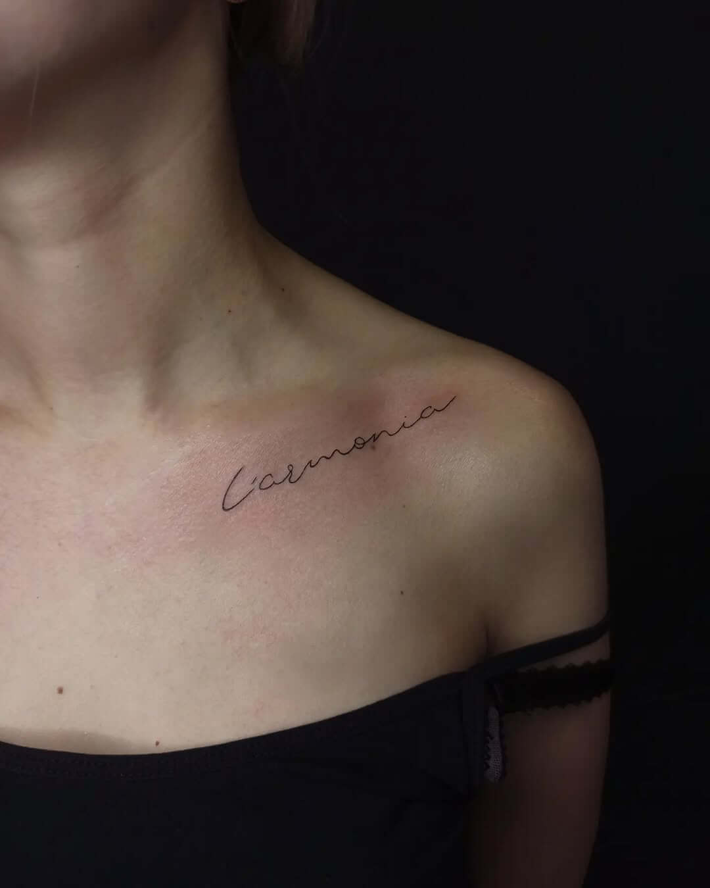
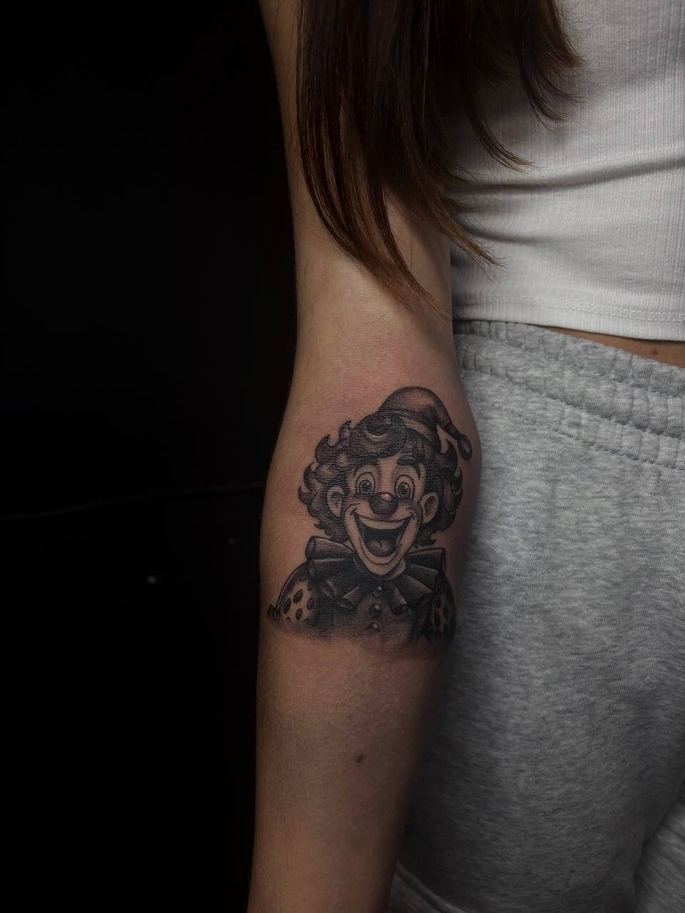
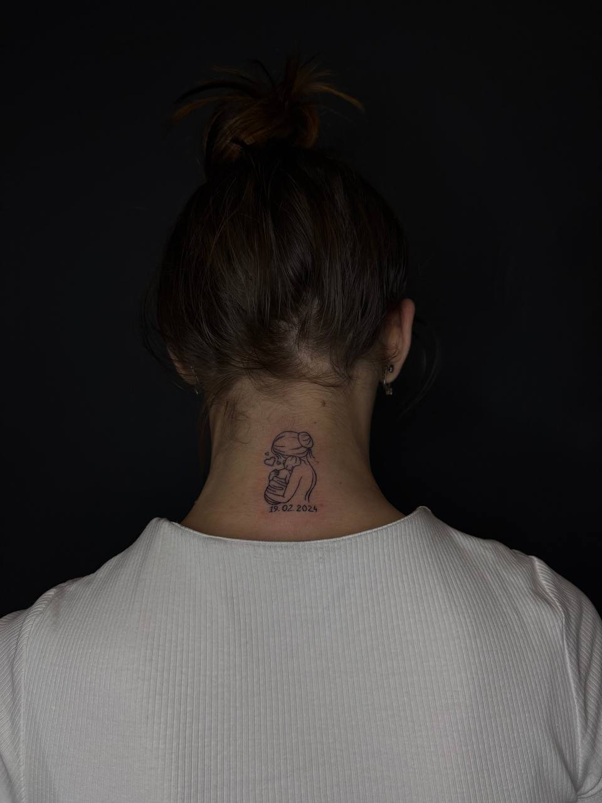
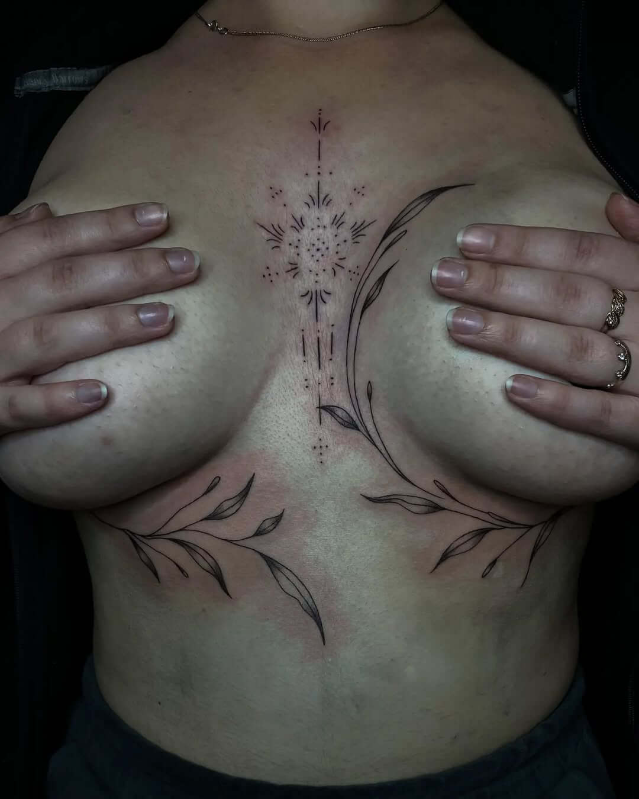
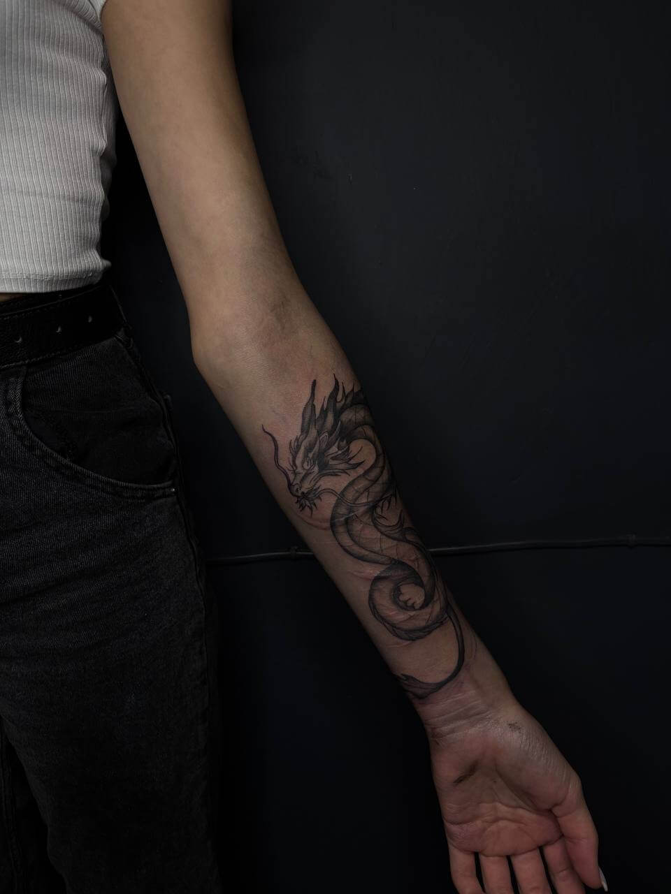
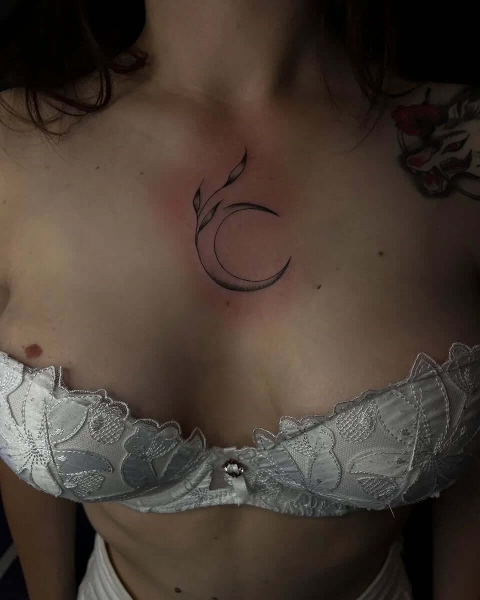

YULIIA YAKOVETS
ARTIST, TATTOO MASTER
ХУДОЖНИК САМОУЧКА І МОЛОДИЙ ТАЛАНТ У СФЕРІ ТАТУЮВАННЯ.
- — Любить реалізовувати незвичайні ідеї.
- — Віддає перевагу роботі в чорно-білому тату.
- — Улюблений стиль - реалізм.
- — Створює по-справжньому індивідуальні ескізи, максимально використовуючи свої творчі здібності та фантазію.
Мінімальна вартість сеансу становить $80.
Наші нещодавні роботи

MINIMALISM TATTO

REALISM TATTO

MINIMALISM TATTO

REALISM TATTO

MINIMALISM TATTO

MINIMALISM TATTO

JAPAN TATTO

MINIMALISM TATTO